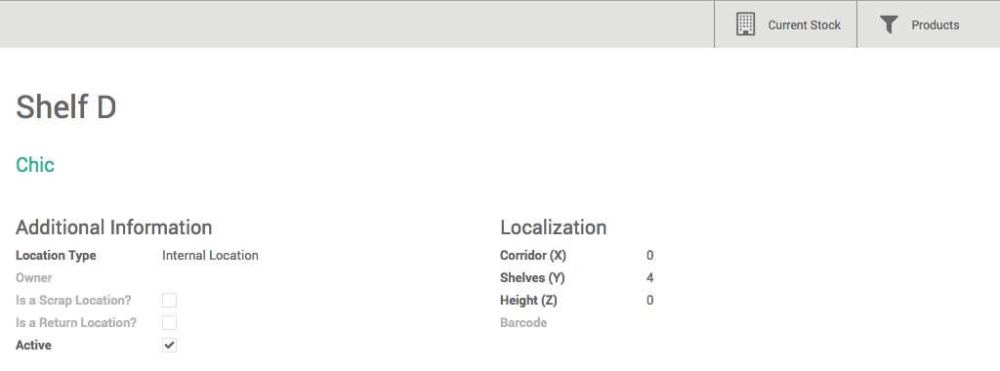

Configuration
Creating a new location
In order to be able to create new locations, you must allow the system to manage multiple locations. In the Inventory module, open the menu . In the Location & Warehouse section, tick the Manage several locations per warehouse box, then click on Apply.
In the Inventory module, open In the Locations window, click on Create.
Type the name of the location in the Location Name field, and select the Parent Location in the list. The parent location can be a physical, partner or virtual location, and you can add as many sub-locations as needed to a location.
You can also fill in the Additional Information fields and add a note to describe your location.
When you are finished, click on Save.
Note
A warehouse also corresponds to a location. As the locations are hierarchical, Odoo will create the parent location of the warehouse, containing all the sublocations in it.